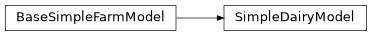

komanawa.simple_farm_model#
A package for simple farm models.
Submodules#
- komanawa.simple_farm_model.base_simple_farm_model
- komanawa.simple_farm_model.memory_test
- komanawa.simple_farm_model.run_multiprocess
- komanawa.simple_farm_model.s_curve_explore
- komanawa.simple_farm_model.simple_dairy_model
- komanawa.simple_farm_model.speed_test
- komanawa.simple_farm_model.stock_rate_conversion
- komanawa.simple_farm_model.utils
- komanawa.simple_farm_model.version
Classes#
Abstract base class for a simple farm economic model. |
|
a version with an s-curve scarcity model requiring additional parameters s, a, b, c |
|
A simple dairy farm model that simulates a dairy farm. The model includes methods for calculating feed requirements, production, and marginal costs/benefits, among other things. |
Functions#
|
calculate the peak cow (peak lactating cow /ha) for a full farm from the milk platform stocking rate. |
Package Contents#
- class BaseSimpleFarmModel(all_months, istate, pg, ifeed, imoney, sup_feed_cost, product_price, monthly_input=True)[source]#
Bases:
objectAbstract base class for a simple farm economic model.
This class provides the basic structure and methods for the farm economic model. It includes methods for running the model, saving results to a netCDF file, reading in a model from a netCDF file, saving results to CSV files, and plotting results.
The class needs to be subclassed and the following methods need to be implemented in the subclass:
convert_pg_to_me()
calculate_feed_needed()
calculate_production()
calculate_sup_feed()
import_feed_and_change_state()
reset_state()
Class Attributes:
- cvar long_name_dict:
(dict) Dictionary of attribute name to attribute long name (unit) for display and metadata.
- cvar obj_dict:
(dict) Dictionary of attribute name to object name. used to
Subclass Attributes that must be set in the subclass:
- cvar states:
(dict): Dictionary of state numbers to state descriptions.
- cvar month_reset:
(int or None): Month number when the farm state is reset. If None then the farm state is not reset.
- cvar homegrown_efficiency:
(float): Efficiency of homegrown feed (e.g. 0.8 means 20% of feed is lost due to inefficency).
- cvar supplemental_efficiency:
(float): Efficiency of supplemental feed. (e.g. 0.8 means 20% of feed is lost due to inefficency).
- cvar sup_feedout_cost:
(float): Cost of feed out. (e.g. 0.5 means $0.50 per MJ of feed).
- cvar homegrown_store_efficiency:
(float): Efficiency of storing homegrown feed. (e.g. 0.8 means 20% of feed is lost due to inefficency).
- cvar homegrown_storage_cost:
(float): Cost of storing homegrown feed. (e.g. 0.5 means $0.50 per MJ of feed).
Instance Attributes:
- Descriptor attributes
- ivar nsims:
(int): Number of simulations.
- ivar time_len:
(int): Number of time steps in the model.
- ivar model_shape:
(tuple): Shape of the model arrays (time_len + 1, nsims).
- ivar _model_input_shape:
(tuple): Shape of the model input arrays (time_len, nsims).
- ivar inpath:
(Path or None) Path to the input file, if the model was read in from a file.
- ivar all_days:
(np.ndarray): Array of day numbers for each time step in the model.
- ivar all_months:
(np.ndarray): Array of month numbers for each time step in the model.
- ivar all_year:
(np.ndarray): Array of year numbers for each time step in the model.
- ivar _run:
(bool): Flag indicating if the model has been run.
- Model input attributes (all transition to model_shape (time, nsims))
- ivar pg:
(np.ndarray): Array of pasture growth amounts for each time step in the model.
- ivar product_price:
(np.ndarray): Array of product prices for each time step in the model.
- ivar sup_feed_cost:
(np.ndarray): Array of supplementary feed costs for each time step in the model.
- Model calculation attributes
- ivar model_feed:
(np.ndarray): Array of feed amounts for each time step in the model.
- ivar model_feed_cost:
(np.ndarray): Array of feed cost amounts for each time step in the model.
- ivar model_feed_demand:
(np.ndarray): Array of feed demand amounts for each time step in the model.
- ivar model_feed_imported:
(np.ndarray): Array of imported feed amounts for each time step in the model.
- ivar model_money:
(np.ndarray): Array of money amounts for each time step in the model.
- ivar model_prod:
(np.ndarray): Array of product amounts for each time step in the model.
- ivar model_prod_money:
(np.ndarray): Array of product money amounts for each time step in the model.
- ivar model_state:
(np.ndarray): Array of state numbers for each time step in the model.
Process:
The run_model method in the BaseSimpleFarmModel class is responsible for running the farm economic model. Here’s a step-by-step description of the process. The model is run on a daily timestep with an assumed 365 day year:
The method first checks if the model has already been run. If it has, it raises an error, pass, or rerun (see run_model docs).
- It then enters a loop that iterates over each month in the model’s timeline. For each month, it performs the following steps:
It sets the start of day values for current money, current feed, and current state.
It allows for supplemental actions at the start of the day, if needed. These can be set in the supplmental_action_first method.
It calculates the pasture growth and converts it to ME (MJ/ha). Both values are stored.
It calculates the feed needed for the cattle.
It identifies surplus homegrown feed, deficit feed, and perfect feed scenarios. By applying the feed efficiency (homegrown_efficiency and supplemental_efficiency). If there is surplus homegrown it stores the surplus (which includes a cost per MJ), if supplemental feed (MJ) is needed feeds out the supplemental needed (including supplemental efficiency), which reduces the feed store and incurs a feed out cost.
It calculates the product produced and stores it.
It calculates the profit from selling the product and adds it to the current money.
It assesses the feed store, imports feed if needed, and changes the state of the farm.
It allows for supplemental actions at the end of the day, if needed. These can be set in the supplmental_action_last method.
If it’s the start of a new year, it resets the state.
Finally, it sets the key values for the current state, feed, and money.
After the loop, it sets the _run attribute to True, indicating that the model has been run.
This method essentially simulates the operation of the farm over time, taking into account various factors such as feed demand, product production, costs, and state transitions.
- Parameters:
all_months – integer months, defines mon_len and time_len
istate – initial state number or np.ndarray shape (nsims,) defines number of simulations
pg – pasture growth kgDM/ha/day np.ndarray shape (mon_len,) or (mon_len, nsims)
ifeed – initial feed number float or np.ndarray shape (nsims,) MJ/ha
imoney – initial money number float or np.ndarray shape (nsims,) $/ha
sup_feed_cost – cost of supplementary feed $/MJ float or np.ndarray shape (nsims,) or (mon_len, nsims)
product_price – income price $/kg product float or np.ndarray shape (nsims,) or (mon_len, nsims)
monthly_input – if True, monthly input, if False, daily input (365 days per year)
- classmethod from_input_file(inpath)[source]#
read in a model from a netcdf file
- Parameters:
inpath
- Returns:
- import_feed_and_change_state(i_month, month, current_state, current_feed)[source]#
import feed and change state
- Parameters:
i_month – month index
month – month
current_state – current state
current_feed – current feed
- Returns:
- output_eq(other, raise_on_diff=False, skip_alt_kwargs=None, compare_idx=None, dimensionality_only=False, rtol=1e-05)[source]#
check if two models are equal
- Parameters:
other – Other model
raise_on_diff – bool if True raise an error if the models are different, if False just return False
skip_alt_kwargs – None or iterable of alt_kwargs to skip testing
compare_idx – None or boolean or int index to compare only a subset of the data. shape=(time, nsims)
dimensionality_only – bool if True only check the dimensionality of the model, if False check all values
- Returns:
- plot_results(*ys, x='time', sims=None, mult_as_lines=True, twin_axs=False, figsize=(10, 8), start_year=2000, bins=20, sub_model=None, **kwargs)[source]#
plot results
- Parameters:
ys –
one or more of: self.long_name_dict.keys() for instance:
’state’ (state of the system)
’feed’ (feed on farm)
’money’ (money on farm)
’feed_demand’ (feed demand)
’prod’ (production)
’prod_money’ (production money)
’feed_imported’ (feed imported)
’feed_cost’ (feed cost)
’pg’ (pasture growth)
’product_price’ (product price)
’sup_feed_cost’ (supplementary feed cost)
x – x axis to plot against ‘time’ or a ys variable
sims –
sim numbers to plot:
None: plot all sims
int: plot a single sim
iterable of ints: plot multiple sims
dictionary with int keys and str values: plot key sims with value labels
mult_as_lines – bool if True, plot multiple sims as lines, if False, plot multiple sims boxplot style pdf
twin_axs – bool if True, plot each y on twin axis, if False, plot on subplots
start_year – the year to start plotting from (default 2000) only affects the transition from year 1, year2, etc. to datetime
bins – number of bins for mult_as_lines=False and x!=’time’
sub_model – None or another model to plot the difference between the two models (self - sub_model)
kwargs – passed to plt.plot if and only if mult_as_lines=True
- Returns:
- run_model(raise_on_rerun=True, rerun=False, printi=False)[source]#
run the model see docstring for process :param raise_on_rerun: if True, raise an error if the model has already been run, if False, just return (don’t rerun the model) :param rerun: if True, rerun the model even if it has already been run :param printi: if True, print iteration identifier :return:
- save_results_csv(outdir, sims=None)[source]#
save results to csv in outdir with name sim_{sim}.csv
- Parameters:
outdir – output directory
sims – sim numbers to save, if None, save all
- Returns:
- save_results_nc(outpath)[source]#
save results to netcdf file
- Parameters:
outpath – path to save file
- Returns:
- supplemental_action_first(i_month, month, day, current_state, current_feed, current_money)[source]#
supplemental actions that might be needed for sub models at the end of each time step. This is a placeholder to allow rapid development without modifying the base class. it is absolutely reasonable to leave as is. :param i_month: :param month: :param day: :param current_state: :param current_feed: :param current_money: :return:
- supplemental_action_last(i_month, month, day, current_state, current_feed, current_money)[source]#
supplemental actions that might be needed for sub models at the end of each time step. This is a placeholder to allow rapid development without modifying the base class. it is absolutely reasonable to leave as is. :param i_month: :param month: :param day: :param current_state: :param current_feed: :param current_money: :return:
- class DairyModelWithSCScarcity(all_months, istate, pg, ifeed, imoney, sup_feed_cost, product_price, opt_mode='optimised', monthly_input=True, s=None, a=None, b=None, c=None, peak_lact_cow_per_ha=default_peak_cow, ncore_opt=1, logging_level=logging.CRITICAL, cull_dry_step=None, cull_levels=None, dryoff_levels=None, allow_mitigation_delay=False)[source]#
Bases:
SimpleDairyModela version with an s-curve scarcity model requiring additional parameters s, a, b, c
- Parameters:
all_months – integer months, defines mon_len and time_len
istate – initial state number or np.ndarray shape (nsims,) defines number of simulations
pg – pasture growth kgDM/ha/day np.ndarray shape (mon_len,) or (mon_len, nsims)
ifeed – initial feed number float or np.ndarray shape (nsims,), MJ/ha
imoney – initial money number float or np.ndarray shape (nsims,) $/ha
sup_feed_cost – cost of supplementary feed $/MJ float or np.ndarray shape (nsims,) or (mon_len, nsims)
product_price – income price $/kg product float or np.ndarray shape (nsims,) or (mon_len, nsims)
opt_mode – one of:
‘optimised’: use scipy.minimize_scalar to optimise the fraction of cows to cull dryoff at each decision point (cpu intensive, but most precise, low memory) cull_dry_step must be None
‘step’: use a fixed step size for cull/dryoff decision (less cpu intensive, less precise, low memory) cull_dry_step must be set
‘coarse’: pick the best of an a. priori. number of cull/dryoff decisions (low cpu, high memory, moderate precision) cull_dry_step must be None
- Parameters:
monthly_input – if True, monthly input, if False, daily input (365 days per year)
s – scarcity scurve scale - the maximum value of the curve (if s=1, the maximum value is 1)
a – scarcity scurve steepness - smoothing parameter as a increases the curve becomes steeper and the inflection point moves to the right
b – scarcity scurve steepness about the inflection point
c – scarcity scurve inflection point (if a=1, c is the x value at which y=0.5)
peak_lact_cow_per_ha – peak lactating cows per ha float
ncore_opt – number of cores to use for optimization of the cull/dryoff decision if ncore_opt==1, do not multiprocess, if ncore_opt > 1, use ncore_opt cores, if ncore_opt =None, use all available cores
logging_level – logging level for the multiprocess component
cull_dry_step – if None, use the optimized cull/dryoff decision, if float, use the cull/dryoff decision with a step size of cull_dry_step
cull_levels – if opt_mode=’coarse’ the number of equally spaced cull steps to make, otherwise must be None
dryoff_levels – if opt_mode=’coarse’ the number of equally spaced dryoff steps to make, otherwise must be None
allow_mitigation_delay – if True, allow for a delay in the implementation of the cull/dryoff decision, if False, implement the cull/dryoff decision immediately. In practice this takes the “best” state and asks if delaying the application of the best state for a decision time step is more financially beneficial as compared to immediate implementation.
- calc_feed_scarcity_cost(i_month, start_cum_ann_feed_import, new_feed, use_sup_feed_cost, nsims)[source]#
Calculate the feed scarcity cost based on the previous cumulative feed import and the new feed import
- Parameters:
start_cum_ann_feed_import – previous cumulative feed import (one per sim)
new_feed – new feed import (ndays, nsims)
- Returns:
feed scarcity cost ($ for the time period) (NOT $/MJ !) np.ndarray shape (ndays, nsims)
- calc_marginal_cost_benefit(i_month, month, current_state, current_feed)[source]#
calculate the marginal cost and benefit of a potential state change
- Parameters:
i_month – model step
month – integer month
current_state – the current states of all models
- Returns:
- calc_next_state_quant_1aday(month, current_state)[source]#
calculate the possible next state down (lower feed requirements) from the current state
- Parameters:
current_state – the current state for all farms
- Returns:
actions np.ndarray shape (nsims,) of the actions:
0: no change
1: cull cows
2: dryoff cows
3: go to once a day milking
- get_annual_feed()[source]#
get the annual feed needed for each farm (does not include any feed inefficiencies)
- Returns:
np.ndarray shape (nsims,)
- import_feed_and_change_state(i_month, month, current_state, current_feed)[source]#
import feed and change state
- Parameters:
i_month – month index
month – month
current_state – current state
current_feed – current feed
- Returns:
- plot_scurve(plt_dnz_fs=False, figsize=(10, 10))[source]#
plot the s-curve :param plt_dnz_fs: bool if true plot the dairy nz farm system boundaries. :return:
- set_mean_pg(pg_dict, pg_raw=None, months=None)[source]#
This method can be used to set a bespoke mean pasture growth for each month to calculate marginal cost/benefit by default this is called on self.pg in the init method
one of pg_dict or pg_raw and months must be set
- Parameters:
pg_dict – None or dict of pasture growth values for each month, keys are 1-12, values are float or np.ndarray shape (nsims,)
pg_raw – None or np.ndarray shape (mon_len, nsims) pasture growth values for each day
months – None or np.ndarray shape (nsims,) of month values for each day
- Returns:
- set_mean_product_price(prod_price_dict, prod_price_raw=None, months=None)[source]#
This method can be used to set a bespoke mean pasture growth for each month to calculate marginal cost/benefit by default this is called on self.prod_price in the init method
one of prod_price_dict or prod_price_raw and months must be set
- Parameters:
prod_price_dict – None or dict of pasture growth values for each month, keys are 1-12, values are float or np.ndarray shape (nsims,)
prod_price_raw – None or np.ndarray shape (mon_len, nsims) pasture growth values for each day
months – None or np.ndarray shape (nsims,) of month values for each day
- Returns:
- set_mean_sup_cost(sup_dict, sup_cost_raw=None, months=None)[source]#
This method can be used to set a bespoke mean supplementary feed cost for each month to calculate marginal cost/benefit by default this is called on self.sup_feedout_cost in the init method
one of sup_dict or sup_cost_raw and months must be set
- Parameters:
sup_dict – None or dict of supplementary feed cost values for each month, keys are 1-12, values are float or np.ndarray shape (nsims,)
sup_cost_raw – None or np.ndarray shape (mon_len, nsims) supplementary feed cost values for each day
months – None or np.ndarray shape (nsims,) of month values for each day
- Returns:
- supplemental_action_last(i_month, month, day, current_state, current_feed, current_money)[source]#
supplemental actions that might be needed for sub models at the end of each time step. This is a placeholder to allow rapid development without modifying the base class. it is absolutely reasonable to leave as is.
Here we use this function to save the cow buckets to output
- Parameters:
i_month
month
day
current_state
current_feed
current_money
- Returns:
- class SimpleDairyModel(all_months, istate, pg, ifeed, imoney, sup_feed_cost, product_price, opt_mode='optimised', monthly_input=True, peak_lact_cow_per_ha=default_peak_cow, ncore_opt=1, logging_level=logging.CRITICAL, cull_dry_step=None, cull_levels=None, dryoff_levels=None, allow_mitigation_delay=False)[source]#
Bases:
komanawa.simple_farm_model.base_simple_farm_model.BaseSimpleFarmModel
A simple dairy farm model that simulates a dairy farm. The model includes methods for calculating feed requirements, production, and marginal costs/benefits, among other things.
- Parameters:
all_months – integer months, defines mon_len and time_len
istate – initial state number or np.ndarray shape (nsims,) defines number of simulations
pg – pasture growth kgDM/ha/day np.ndarray shape (mon_len,) or (mon_len, nsims)
ifeed – initial feed number float or np.ndarray shape (nsims,) MJ/ha
imoney – initial money number float or np.ndarray shape (nsims,) $/ha
sup_feed_cost – cost of supplementary feed $/MJ float or np.ndarray shape (nsims,) or (mon_len, nsims)
product_price – income price $/kg product float or np.ndarray shape (nsims,) or (mon_len, nsims)
opt_mode – one of:
‘optimised’: use scipy.minimize_scalar to optimise the fraction of cows to cull dryoff at each decision point (cpu intensive, but most precise, low memory) cull_dry_step must be None
‘step’: use a fixed step size for cull/dryoff decision (less cpu intensive, less precise, low memory) cull_dry_step must be set
‘coarse’: pick the best of an a. priori. number of cull/dryoff decisions (low cpu, high memory, moderate precision) cull_dry_step must be None
- Parameters:
monthly_input – if True, monthly input, if False, daily input (365 days per year)
peak_lact_cow_per_ha – peak lactating cows per ha float
ncore_opt – number of cores to use for optimization of the cull/dryoff decision if ncore_opt==1, do not multiprocess, if ncore_opt > 1, use ncore_opt cores, if ncore_opt =None, use all available cores
logging_level – logging level for the multiprocess component
cull_dry_step – if None, use the optimized cull/dryoff decision, if float, use the cull/dryoff decision with a step size of cull_dry_step
cull_levels – if opt_mode=’coarse’ the number of equally spaced cull steps to make, otherwise must be None
dryoff_levels – if opt_mode=’coarse’ the number of equally spaced dryoff steps to make, otherwise must be None
allow_mitigation_delay – if True, allow for a delay in the implementation of the cull/dryoff decision, if False, implement the cull/dryoff decision immediately. In practice this takes the “best” state and asks if delaying the application of the best state for a decision time step is more financially beneficial as compared to immediate implementation.
- calc_feed_scarcity_cost(i_month, start_cum_ann_feed_import, new_feed, use_sup_feed_cost, nsims)[source]#
Calculate the feed scarcity cost based on the previous cumulative feed import and the new feed import
- Parameters:
start_cum_ann_feed_import – previous cumulative feed import (one per sim)
new_feed – new feed import (ndays, nsims)
- Returns:
feed scarcity cost ($ for the time period) (NOT $/MJ !) np.ndarray shape (ndays, nsims)
- calc_marginal_cost_benefit(i_month, month, current_state, current_feed)[source]#
calculate the marginal cost and benefit of a potential state change
- Parameters:
i_month – model step
month – integer month
current_state – the current states of all models
- Returns:
- calc_next_state_quant_1aday(month, current_state)[source]#
calculate the possible next state down (lower feed requirements) from the current state
- Parameters:
current_state – the current state for all farms
- Returns:
actions np.ndarray shape (nsims,) of the actions:
0: no change
1: cull cows
2: dryoff cows
3: go to once a day milking
- get_annual_feed()[source]#
get the annual feed needed for each farm (does not include any feed inefficiencies)
- Returns:
np.ndarray shape (nsims,)
- import_feed_and_change_state(i_month, month, current_state, current_feed)[source]#
import feed and change state
- Parameters:
i_month – month index
month – month
current_state – current state
current_feed – current feed
- Returns:
- set_mean_pg(pg_dict, pg_raw=None, months=None)[source]#
This method can be used to set a bespoke mean pasture growth for each month to calculate marginal cost/benefit by default this is called on self.pg in the init method
one of pg_dict or pg_raw and months must be set
- Parameters:
pg_dict – None or dict of pasture growth values for each month, keys are 1-12, values are float or np.ndarray shape (nsims,)
pg_raw – None or np.ndarray shape (mon_len, nsims) pasture growth values for each day
months – None or np.ndarray shape (nsims,) of month values for each day
- Returns:
- set_mean_product_price(prod_price_dict, prod_price_raw=None, months=None)[source]#
This method can be used to set a bespoke mean pasture growth for each month to calculate marginal cost/benefit by default this is called on self.prod_price in the init method
one of prod_price_dict or prod_price_raw and months must be set
- Parameters:
prod_price_dict – None or dict of pasture growth values for each month, keys are 1-12, values are float or np.ndarray shape (nsims,)
prod_price_raw – None or np.ndarray shape (mon_len, nsims) pasture growth values for each day
months – None or np.ndarray shape (nsims,) of month values for each day
- Returns:
- set_mean_sup_cost(sup_dict, sup_cost_raw=None, months=None)[source]#
This method can be used to set a bespoke mean supplementary feed cost for each month to calculate marginal cost/benefit by default this is called on self.sup_feedout_cost in the init method
one of sup_dict or sup_cost_raw and months must be set
- Parameters:
sup_dict – None or dict of supplementary feed cost values for each month, keys are 1-12, values are float or np.ndarray shape (nsims,)
sup_cost_raw – None or np.ndarray shape (mon_len, nsims) supplementary feed cost values for each day
months – None or np.ndarray shape (nsims,) of month values for each day
- Returns:
- supplemental_action_last(i_month, month, day, current_state, current_feed, current_money)[source]#
supplemental actions that might be needed for sub models at the end of each time step. This is a placeholder to allow rapid development without modifying the base class. it is absolutely reasonable to leave as is.
Here we use this function to save the cow buckets to output
- Parameters:
i_month
month
day
current_state
current_feed
current_money
- Returns: